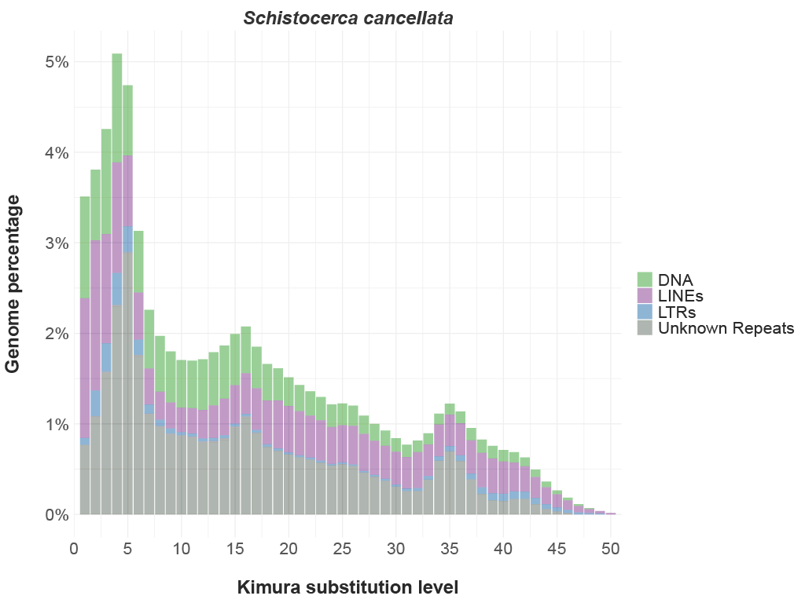

Last updated: 2025-07-11
Checks: 7 0
Knit directory: song-lab/
This reproducible R Markdown analysis was created with workflowr (version 1.7.1). The Checks tab describes the reproducibility checks that were applied when the results were created. The Past versions tab lists the development history.
Great! Since the R Markdown file has been committed to the Git repository, you know the exact version of the code that produced these results.
Great job! The global environment was empty. Objects defined in the global environment can affect the analysis in your R Markdown file in unknown ways. For reproduciblity it’s best to always run the code in an empty environment.
The command set.seed(20240605) was run prior to running
the code in the R Markdown file. Setting a seed ensures that any results
that rely on randomness, e.g. subsampling or permutations, are
reproducible.
Great job! Recording the operating system, R version, and package versions is critical for reproducibility.
Nice! There were no cached chunks for this analysis, so you can be confident that you successfully produced the results during this run.
Great job! Using relative paths to the files within your workflowr project makes it easier to run your code on other machines.
Great! You are using Git for version control. Tracking code development and connecting the code version to the results is critical for reproducibility.
The results in this page were generated with repository version d4842dd. See the Past versions tab to see a history of the changes made to the R Markdown and HTML files.
Note that you need to be careful to ensure that all relevant files for
the analysis have been committed to Git prior to generating the results
(you can use wflow_publish or
wflow_git_commit). workflowr only checks the R Markdown
file, but you know if there are other scripts or data files that it
depends on. Below is the status of the Git repository when the results
were generated:
Ignored files:
Ignored: .DS_Store
Ignored: .RData
Ignored: .Rhistory
Ignored: analysis/.DS_Store
Unstaged changes:
Modified: analysis/_site.yml
Modified: analysis/orthop-genomes-project.Rmd
Note that any generated files, e.g. HTML, png, CSS, etc., are not included in this status report because it is ok for generated content to have uncommitted changes.
These are the previous versions of the repository in which changes were
made to the R Markdown (analysis/kimura.Rmd) and HTML
(docs/kimura.html) files. If you’ve configured a remote Git
repository (see ?wflow_git_remote), click on the hyperlinks
in the table below to view the files as they were in that past version.
| File | Version | Author | Date | Message |
|---|---|---|---|---|
| html | a1b980b | ecbaker7-tamu | 2025-07-10 | Build site. |
| Rmd | 8b1f9da | ecbaker7-tamu | 2025-07-10 | wflow_publish(c("analysis/alphafold.Rmd", "analysis/Apollo.Rmd", |
To generate a kimura repeat content plot, first you must run the script included in the RepeatMasker module called calcDivergenceFromAlign.pl. I did this using the script below on the TAMU Grace Cluster
#!/bin/bash
#SBATCH --job-name=Generate-Dist
#SBATCH --time=03:00:00
#SBATCH --nodes=1 # max 64 nodes for partition long
#SBATCH --ntasks-per-node=1
#SBATCH --cpus-per-task=48
#SBATCH --mem=360G
#SBATCH --mail-type=ALL
#SBATCH --mail-user=user@mail.com
#SBATCH --output=stdout.%x.%j
#SBATCH --error=stderr.%x.%j
module purge
module load GCC/11.3.0 OpenMPI/4.1.4 RepeatMasker/4.1.4
/sw/eb/sw/RepeatMasker/4.1.4-foss-2022a/util/calcDivergenceFromAlign.pl -s {SpeciesName}.distance {SpeciesName}_genomic.fa.alignThis will generate a file with a .distance suffix. I find it easier to just download this file and generate the figure locally, as we will need to edit this file as well. When you open your species.distance file you should see something like in the block below:
Jukes/Cantor and Kimura subsitution levels adjusted for CpG sites
=================================================================
File: GCF_023864275.1_iqSchCanc2.1_genomic.fa.align
Weighted average Kimura divergence for each repeat family
Class Repeat absLen wellCharLen Kimura%
----- ------ ------ ----------- -------
DNA rnd-4_family-3901 2850838 2828840 9.37
DNA rnd-5_family-7626 384874 375022 18.86
DNA/Academ-1 rnd-5_family-132 136309 134796 21.75
⋮
LINE rnd-4_family-267 2208155 2149395 32.22
LINE rnd-4_family-268 243936 240416 20.67
LINE rnd-5_family-1066 674334 658113 22.96
⋮
LTR/Copia rnd-5_family-1055 766978 760738 15.83
LTR/Copia rnd-5_family-1977 149895 146399 25.27
⋮
RC/Helitron rnd-4_family-1433 1591130 1508796 17.81
RC/Helitron rnd-4_family-1977 1352003 1334534 17.66
⋮
Simple_repeat combined 45799202 45402746 ----
Unknown rnd-1_family-1 141049217 140819533 5.19
⋮
tRNA rnd-5_family-26180 476868 476755 3.98
tRNA rnd-5_family-5841 2251189 2236163 10.50
Coverage for each repeat class and divergence (Kimura)
Div DNA DNA/Academ-1 ... LINE LINE/CR1 ... LTR/Copia ... RC/Helitron Simple_repeat Unknown tRNA
0 290 2240 223288 ... 214984 707342 328 ... 6524 711 0 56168370 340641
⋮But much, much larger. Copy and paste from where it starts with “Div”, below the header for the Kimura scores. Create a new file named {SpeciesSuffix}.distance and copy and paste the text to this file. It should look like this:
Div DNA DNA/Academ-1 ... LINE LINE/CR1 ... LTR/Copia ... RC/Helitron Simple_repeat Unknown tRNA
0 290 2240 223288 ... 214984 707342 328 ... 6524 711 0 56168370 340641
⋮
To create a Kimura plot for a single genome, create a file called kimura-single.R and copy and paste the following code into it:
# ------------------------------------------------------------------------------------------------ #
# Repeat annotation summary
#
# Simple figure to summarise repeat families within each genome assembly
# ------------------------------------------------------------------------------------------------ #
# Libraries
suppressPackageStartupMessages({
library(tidyverse)
library(magrittr)
library(here)
library(scales)
library(ragg)
library(readr)
})
# ------------------------------------------------------------------------------------------------ #
# ------------------- Edit for your species ------------------------------------------------- #
size = 8500000000 # Total genome size
sample_name = "Schistocerca cancellata"
file <- "song_assembly/SchCanc.distance"
# ------------------------------------------------------------------------------------------------ #
genome_sizes <- tibble(sample = sample_name, size = size)
pal <- colorRampPalette(RColorBrewer::brewer.pal(n = 7, 'Set3')) # Set color pallette
header <- read_lines(file=file, n_max=1)
df.kimura <- read_table(file, col_types = cols(.default = col_double())) # Read in data (1 species)
df.kimura <- df.kimura[, -ncol(df.kimura)] %>% # Remove last column created from whitespace on EOL
mutate(sample = sample_name) %>% # Add in col for sample name, unnecessary?
left_join(genome_sizes, by = "sample") %>% # Join df.kimura with genome.sizes by sample
pivot_longer(cols = -c(sample, size, Div), names_to = "repeat_type", values_to = "value") %>%# Make the width of the column the height
separate(col = repeat_type, into = c("Family", "Sub-family"), sep = "/") %>% # Seperate Family and Sub-family by "/"
mutate(`Sub-family` = ifelse(is.na(`Sub-family`), Family, `Sub-family`)) %>% # If sub-family empty, put Family name
mutate(
percentage = (value/size) * 100 # calculate percentage composition of genome
) %>%
mutate(`Sub-family` = ifelse(is.na(`Sub-family`), Family, `Sub-family`))
tmp <- df.kimura |>
filter(!is.na(value), !str_detect(Family, '\\?')) |>
group_by(sample, Div, Family) |>
mutate(total_family = sum(value), percentage_family = (total_family/size) * 100) |>
select(sample, Div, Family, percentage_family) |>
ungroup() |>
distinct()
tmp_filtered <- tmp |> filter(percentage_family > 0.01)
# Plotting
kimura.gg <- ggplot(tmp_filtered, aes(x = Div, y = percentage_family, fill = Family)) +
geom_bar(position = "stack", stat = "identity", alpha = 0.6) +
scale_fill_manual( # associate colors with family names
values = c(
DNA = '#4eaf49',
LINE = '#984f9f',
LTR = '#397fb9',
MITE = '#f7941d',
Unknown = '#737e76'
),
labels = c(
DNA = "DNA",
LINE = "LINEs",
LTR = "LTRs",
MITE = "MITEs",
Unknown = "Unknown Repeats"
) ) +
labs(
x = '\nKimura substitution level',
y = 'Genome percentage\n',
fill = '\n'
) +
scale_y_continuous(labels = scales::label_number(suffix = '%')) +
scale_x_continuous(
breaks = seq(0, 50, 5),
limits = c(0, 55),
expand = c(0, 0)
) +
coord_cartesian(xlim = c(0, 51)) +
theme_minimal() +
theme(
axis.title = element_text(size = 20, face = 'bold'),
axis.text = element_text(size = 18),
legend.position = 'right',
legend.title = element_text(size = 18),
legend.text = element_text(size = 18),
strip.text = element_text(size = 20, face = 'bold.italic')
) +
facet_wrap(~sample, nrow = 4)
# Save plot
pdf(
file = paste0(sample_name, "-kimura.pdf"),
width = 12,
height = 9
)
print(kimura.gg)
invisible(dev.off())This plot has the genome of importance at the top, but if you wish to have all genome in the columns side-by-side, simply delete the section that begins with the comment “Seperate gregaria from the others” and ends just above the comment “Other species” and add all genomes to the second plotting section. You will also need to alter the output commands by simply removing the line combining all the plots into a single plot called “combined” and print the other_group plot instead. This should give you a combined plot with all genomes in a maximum fof 2 columns, which of course can also be adjusted within the facet_wrap command.
Create a new R script called kimura-plot-mult-genomes.R and copy and paste the following script into it:
# ------------------------------------------------------------------------------------------------ #
# Repeat annotation summary
#
# Simple figure to summarise repeat families within each genome assembly
# ------------------------------------------------------------------------------------------------ #
# Librariesx
suppressPackageStartupMessages({
library(tidyverse)
library(magrittr)
library(here)
library(scales)
library(ragg)
})
# ------------------------------------------------------------------------------------------------ #
#########################################################################################################################
################################################# CHANGE HERE 1/5 ########################################################
genome.sizes <- tibble(
sample = c('Schistocerca gregaria', 'Schistocerca piceifrons', 'Schistocerca cancellata', 'Schistocerca nitens', 'Schistocerca serialis cubense', 'Schistocerca americana', 'Locusta migratoria', 'Anabrus simplex', 'Gryllus bimaculatus', 'Gryllus longicercus', 'Cryptotermes secundus', 'Bacillus rossius redtenbacheri', 'Periplaneta americana'),
size = c(8700000000, 8700000000, 8500000000, 8800000000, 9100000000, 9000000000, 6300000000, 6400000000, 1700000000, 1900000000, 1000000000, 1600000000, 3200000000)
)
##########################################################################################################################
##########################################################################################################################
pal <- colorRampPalette(RColorBrewer::brewer.pal(n = 7, 'Set3'))
# ------------------------------------------------------------------------------------------------ #
# Kimura divergence tables
df.kimura <- fs::dir_ls(
path = 'song_assembly',
glob = '*distance',
recurse = TRUE
) |>
map(read_delim, delim = ' ', col_names = TRUE, col_types = cols()) |>
list_rbind(names_to = 'sample') |>########################################################################################
mutate( ############################################ CHANGE HERE 2/5 #######################################################
sample = case_when(
sample == 'song_assembly/SchGreg.distance' ~ 'Schistocerca gregaria',
sample == 'song_assembly/SchPice.distance' ~ 'Schistocerca piceifrons',
sample == 'song_assembly/SchCanc.distance' ~ 'Schistocerca cancellata',
sample == 'song_assembly/SchNite.distance' ~ 'Schistocerca nitens',
sample == 'song_assembly/SchSeri.distance' ~ 'Schistocerca serialis cubense',
sample == 'song_assembly/SchAmer.distance' ~ 'Schistocerca americana',
sample == 'song_assembly/LocMig.distance' ~ 'Locusta migratoria',
sample == 'song_assembly/AnsimpID.distance' ~ 'Anabrus simplex',
sample == 'song_assembly/GryBi.distance' ~ 'Gryllus bimaculatus',
sample =='song_assembly/GryLong.distance' ~ 'Gryllus longicercus',
sample == 'song_assembly/Csecu.distance' ~ 'Cryptotermes secundus',
sample =='song_assembly/Brsri.distance' ~ 'Bacillus rossius redtenbacheri',
sample == 'song_assembly/PeriAmer.distance' ~ 'Periplaneta americana',
.default = sample
)#########################################################################################################################
) |>########################################################################################################################
select(-starts_with('...')) |>
(\(x) pivot_longer(data = x, names_to = 'repeat_type', values_to = 'value', cols = 3:ncol(x)))() |>
left_join(genome.sizes, by = "sample")|>
mutate(
percentage = (value/size) * 100,################################# CHANGE HERE 3/5 #######################################################
sample = factor(sample, levels = c('Schistocerca gregaria', 'Schistocerca piceifrons', 'Schistocerca cancellata', 'Schistocerca nitens', 'Schistocerca serialis cubense', 'Schistocerca americana', 'Locusta migratoria', 'Anabrus simplex', 'Gryllus bimaculatus', 'Gryllus longicercus', 'Cryptotermes secundus', 'Bacillus rossius redtenbacheri', 'Periplaneta americana'))
) |>####################################################################################################################################
separate(col = repeat_type, into = c('Family', 'Sub-family'), sep = '/') |>
mutate(`Sub-family` = ifelse(is.na(`Sub-family`), Family, `Sub-family`))
# Temporary while I re-run repeat masker with repbase
tmp <- df.kimura |>
filter(!is.na(value), !str_detect(Family, '\\?')) |>
group_by(sample, Div, Family) |>
mutate(total_family = sum(value), percentage_family = (total_family/size) * 100) |>
select(sample, Div, Family, percentage_family) |>
ungroup() |>
distinct()
# ------------------------------------------------------------------------------------------------ #
library(ggplot2)
library(dplyr)
library(scales)
library(patchwork)
# Separate gregaria from others
greg_plot <- tmp |>################################# CHANGE HERE 4/5 #######################################################
filter(sample == "Schistocerca gregaria", percentage_family > 0.01) |>
ggplot(aes(x = Div, y = percentage_family, fill = Family)) +##################################################################
geom_bar(position = "stack", stat = "identity", alpha = 0.6) +
scale_fill_manual(
values = c(DNA = '#4eaf49', LINE = '#984f9f', LTR = '#397fb9', MITE = '#f7941d', Unknown = '#737e76'),
labels = c(DNA = "DNA", LINE = "LINEs", LTR = "LTRs", MITE = "MITEs", Unknown = "Unknown Repeats")
) +
labs(
x = '\nKimura substitution level',
y = 'Genome percentage\n',
fill = '\n'
) +
scale_y_continuous(labels = label_number(suffix = '%')) +
scale_x_continuous(breaks = seq(0, 50, 5), limits = c(0, 55), expand = c(0,0)) +
coord_cartesian(xlim = c(0, 51)) +
theme_minimal() +
theme(
axis.title = element_text(size = 20, face = 'bold'),
axis.text = element_text(size = 18),
legend.position = 'bottom',
legend.title = element_text(size = 18),
legend.text = element_text(size = 18),
strip.text = element_text(size = 20, face = 'bold.italic'),
plot.title = element_text(size = 30, face = 'bold.italic', hjust = 0.5)
) +
facet_wrap(~sample)
# Other species
other_plot <- tmp |>####################################################### CHANGE HERE 5/5 ############################################
filter(sample != "Schistocerca gregaria", percentage_family > 0.01) |>
ggplot(aes(x = Div, y = percentage_family, fill = Family)) +
geom_bar(position = "stack", stat = "identity", alpha = 0.6) +
scale_fill_manual(
values = c(DNA = '#4eaf49', LINE = '#984f9f', LTR = '#397fb9', MITE = '#f7941d', Unknown = '#737e76'),
labels = c(DNA = "DNA", LINE = "LINEs", LTR = "LTRs", MITE = "MITEs", Unknown = "Unknown Repeats")
) +
labs(
x = '\nKimura substitution level',
y = 'Genome percentage\n',
fill = '\n'
) +
scale_y_continuous(labels = label_number(suffix = '%')) +
scale_x_continuous(breaks = seq(0, 50, 5), limits = c(0, 55), expand = c(0,0)) +
coord_cartesian(xlim = c(0, 51)) +
theme_minimal() +
theme(
axis.title = element_text(size = 20, face = 'bold'),
axis.text = element_text(size = 18),
legend.position = 'bottom',
legend.title = element_text(size = 18),
legend.text = element_text(size = 18),
strip.text = element_text(size = 20, face = 'bold.italic')
) +
facet_wrap(~sample, ncol = 2)
# Combine the plots
combined <- ((plot_spacer() + greg_plot + plot_spacer()) + plot_layout(widths = c(0.05, 2, 0.05))) /
other_plot + plot_layout(heights = c(0.7, 2))
# Save
pdf(file = here("multigenome-kimura.pdf"), width = 18, height = 25)
print(combined)
invisible(dev.off())
sessionInfo()R version 4.4.2 (2024-10-31)
Platform: aarch64-apple-darwin20
Running under: macOS Sequoia 15.1
Matrix products: default
BLAS: /Library/Frameworks/R.framework/Versions/4.4-arm64/Resources/lib/libRblas.0.dylib
LAPACK: /Library/Frameworks/R.framework/Versions/4.4-arm64/Resources/lib/libRlapack.dylib; LAPACK version 3.12.0
locale:
[1] en_US.UTF-8/en_US.UTF-8/en_US.UTF-8/C/en_US.UTF-8/en_US.UTF-8
time zone: America/Chicago
tzcode source: internal
attached base packages:
[1] stats graphics grDevices utils datasets methods base
loaded via a namespace (and not attached):
[1] vctrs_0.6.5 cli_3.6.4 knitr_1.50 rlang_1.1.6
[5] xfun_0.52 stringi_1.8.7 promises_1.3.2 jsonlite_2.0.0
[9] workflowr_1.7.1 glue_1.8.0 rprojroot_2.0.4 git2r_0.36.2
[13] htmltools_0.5.8.1 httpuv_1.6.16 sass_0.4.10 rmarkdown_2.29
[17] evaluate_1.0.3 jquerylib_0.1.4 tibble_3.2.1 fastmap_1.2.0
[21] yaml_2.3.10 lifecycle_1.0.4 whisker_0.4.1 stringr_1.5.1
[25] compiler_4.4.2 fs_1.6.6 Rcpp_1.0.14 pkgconfig_2.0.3
[29] rstudioapi_0.17.1 later_1.4.2 digest_0.6.37 R6_2.6.1
[33] pillar_1.10.2 magrittr_2.0.3 bslib_0.9.0 tools_4.4.2
[37] cachem_1.1.0